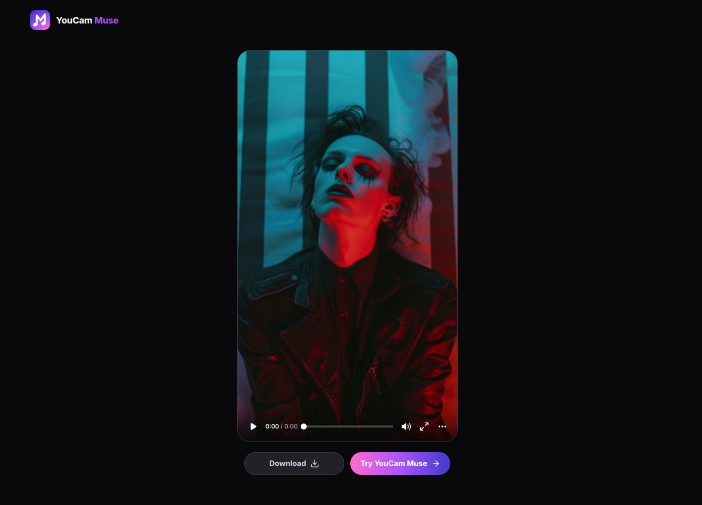
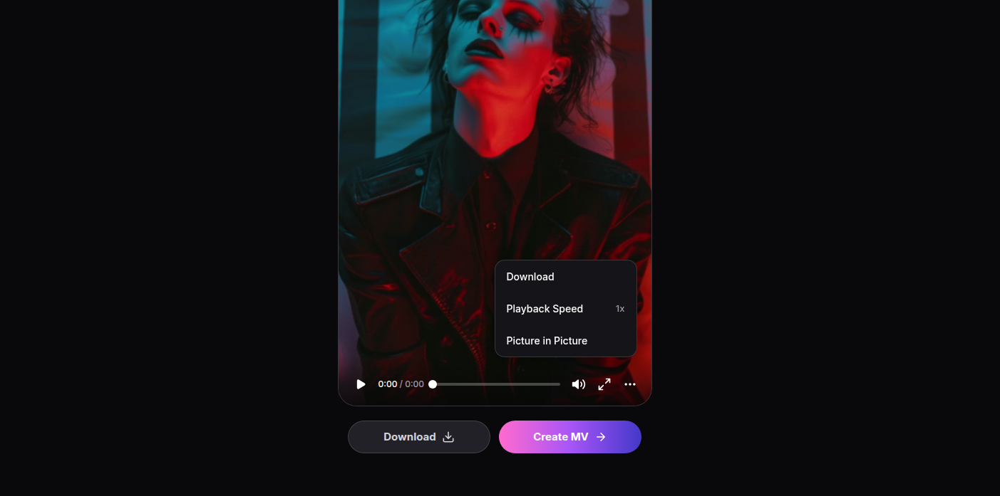
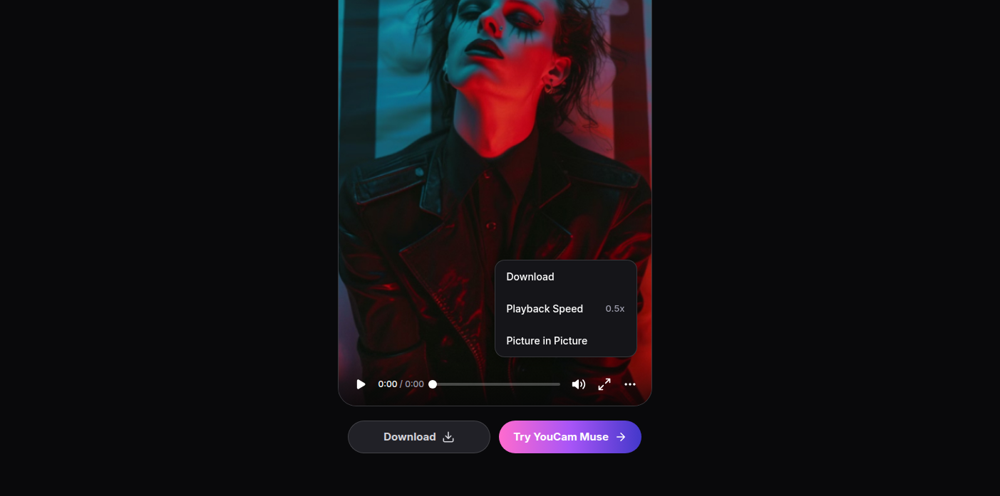
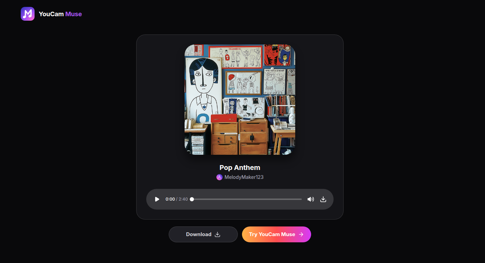
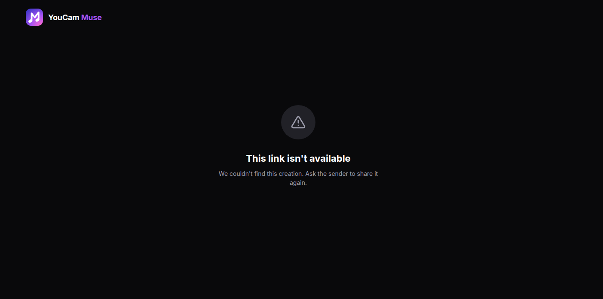
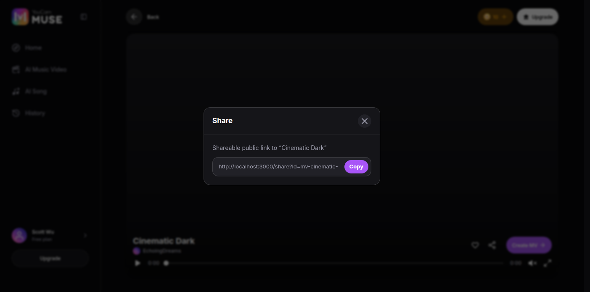
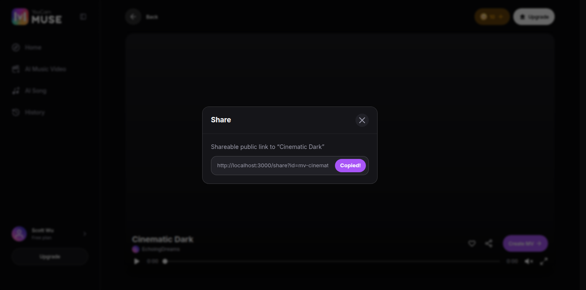

Share
The public share link and the dialog that mints it: /share — a bare, unauthenticated landing page carrying the media, a full playback controller and two actions — and ShareDialog, the copy-link-only dialog every result and player screen in the app opens.
| Platform | YouCam Muse Web — captured at 1403×697 (desktop only, D8) |
| Audience | QA |
| Scope | /share for a valid MV and a valid song (panel, controller, More menu, both action pills), the unavailable state and all three ways to reach it, the legacy share URL, and the ShareDialog with its Copy confirmation. |
| Out of scope | The result and player screens that OPEN the dialog (areas 02/03/04 — S1, S2, S8, which capture the entry points); real server-side link resolution, which does not exist (see Prototype vs production); share-link analytics, which has no field spec yet. |
| Source | specs/areas/10-share.md (§§1-9, AC-SHARE-01..06) and the running app |
↓ Flow Diagram — full user journey (click to expand)
Mermaid source
flowchart TD
Btn["A Share control on any result or player screen"] --> Dlg["Share dialog: a read-only link + Copy"]
Dlg -->|Copy| Copied["Copied! for 1.5s, then reverts"]
Dlg -->|the recipient opens the link| Page["/share?id= - bare, public, no app chrome"]
Legacy["The legacy MV share URL"] -->|server redirect| Page
Page --> Resolve{Does the id resolve?}
Resolve -->|community item, History sample, or your own completed creation| Kind{Which kind?}
Kind -->|music video| Mv["MV panel: video + controller, no title, no creator"]
Kind -->|song| Song["Song panel: art, title, creator, controller"]
Mv -->|More| Menu["Download / Playback Speed / Picture in Picture"]
Mv --> Pills["Download + a kind-labelled Create pill"]
Song --> Pills
Pills -->|Create| Home["The home page - both pills land here"]
Resolve -->|no| Gone["This link is not available"]
Live["A LIVE own creation, opened in a fresh session"] --> Gone
Gone -->|the header logo| Home
| ID | Path | Entry point | Steps | Outcome |
|---|---|---|---|---|
| P1 | A valid MV link | Opening /share?id= — no sign-in, no app | 4 steps | The recipient watches it, saves it, or goes to the product |
| P2 | The More menu | The More control on a valid MV link | 3 steps | The recipient saves the file, changes the speed, or pops the video out |
| P3 | A valid song link | Opening /share?id= on a song | 3 steps | The recipient listens, saves it, or goes to the product |
| P4 | An unavailable link | Opening /share with an id that does not resolve | 4 steps | The recipient is told the link did not resolve, and can reach the product |
| P5 | Minting a link | Any Share control in the app; or an old-format share URL | 3 steps | A link on the clipboard, or a legacy URL landing on the canonical page |
What a recipient with no account gets when the link resolves to a music video.
- P1-S1 Opens a shared music-video link, with no account and nothing signed in.
- P1-S2 Looks at the controller under the video.
- P1-S3 Looks at the two pills below the panel.
- P1-S4 Opens a link to one of the sample creations, in a completely fresh session.

- 1Logo header — the only way home
- 2The media, and nothing identifying it
- Header wordmark: “YouCam Muse”
- Actions: “Download”, “Try YouCam Muse”
- The page renders with NO sidebar, tab bar, header or navbar.AC-SHARE-01. Verified on every state below, not only this one.
- The MV panel shows the media and nothing that identifies it — no title, no creator.Measured live, and settled as correct (D-08): an MV usually carries its own title on screen, so repeating it is redundant. The song panel DOES show both, which is why P3 is a separate path.
- The route is not behind any guard, and nothing on it asks for an account.The whole point of a share link is that the recipient does not have one.

- 1Play/pause, elapsed / total, seek, mute, fullscreen, More
- The controller is the product’s own, not the browser’s default video controls.AC-SHARE-01 as redesigned 2026-08-24; it matches the vocabulary the in-app players use.
- The seek control is keyboard-operable, like every other seek bar in the app.It is the shared seek component, not a bespoke one.
- The time reads elapsed and total as one pair, not as two separate labels.

- 1Download — saves the file
- 2Neutral label, and it goes to the home page
- Download saves the media under the creation’s own title with the matching extension.AC-SHARE-05.
- Download renders only when there is a media URL to save.A creation with no file offers no Download.
- The Create pill reads the SAME neutral string on both media kinds, and goes to the home page.Product owner, 2026-09-01 (D-07). Only the pill’s gradient still varies by kind; a visitor with no account meets the product first rather than being dropped into a create flow.

- 1A History sample resolves in a fresh session, like a community item
- An id resolves from four sources in order: community MV, community song, your own completed creation, then the samples.AC-SHARE-01. The first, second and fourth survive a reload; the third does not — see P4-S4.
- Which source an id came from changes nothing on screen.Verified live: the sample renders the same panel as P1-S1.
Three actions the redesign added, and the one that behaves differently from the other two.
- P2-S1 Presses More on the controller.
- P2-S2 Presses Playback Speed repeatedly.
- P2-S3 Presses Picture in Picture.

- 1Download, Playback Speed, Picture in Picture
- Menu, in order: “Download”, “Playback Speed”, “Picture in Picture”
- Exactly three items, in this order.Read off the live menu during capture.
- Download here is the same action as the pill below the panel.AC-SHARE-05. It is offered twice, not two different things.
- The menu closes on Escape, on an outside press, and on Download or Picture in Picture.Those two are one-shot actions; Playback Speed is not — see P2-S2.

- 1The rate cycles on each press; the menu stays open
- Playback Speed CYCLES; it does not open a submenu and does not close the menu.Measured live across three consecutive presses, each landing on a different rate.
- The rate shown beside the item is the rate actually applied to the video.Confirmed live by reading it back off the media element.
- The cycle wraps, so the starting rate comes back round.There is no reset control; pressing on is how you get back.
- It is a no-op where the browser does not support picture-in-picture.The item is always shown; the request is simply not made.
- No screenshot: the floating window belongs to the browser, so a page capture cannot photograph it.
The other panel — and the only one that tells the recipient what they are listening to.
- P3-S1 Opens a shared song link.
- P3-S2 Looks at the controller under the artwork.
- P3-S3 Looks at the two pills below the panel.

- 1Cover art
- 2Title and creator — the MV panel has neither
- Title on this example: “Pop Anthem”
- Creator on this example: “MelodyMaker123”
- The song panel identifies its media; the MV panel does not.Measured live on both, and the asymmetry is deliberate (D-08): cover art carries no words, so a song has to be named.
- The creator line renders only when the media carries one.A sample creation has no creator, so the line is simply absent.
- The header, the two action pills and the bare-page rule are identical to the MV panel.

- 1Play/pause, elapsed / total, seek, mute, download
- The song controller carries Download; the MV controller carries fullscreen and More instead.The two panels are different components, not one with a switch.
- There is no fullscreen and no More menu on a song.Neither applies to audio with a still cover.
- Playback is a real audio element — the position and duration are its own.

- 1Download — saves the audio
- 2The same label; only the gradient differs by kind
- Actions: “Download”, “Try YouCam Muse” — the same string as the MV panel’s
- Download saves the audio under the song’s title with the audio extension.AC-SHARE-05.
- The Create pill is identical to the MV panel’s, in label and destination.Only the gradient differs by kind — see P1-S3.
One state, three ways in — and the reason it is NOT called expiry.
- P4-S1 Opens a share link whose id matches nothing.
- P4-S2 Opens /share with no id at all.
- P4-S3 Opens a link with the expired-state switch in the address.
- P4-S4 Shares one of their OWN just-finished creations, and the recipient opens it.

- 1The unavailable state
- 2The header logo is the only way out
- Heading: “This link isn’t available”
- Body: “We couldn’t find this creation. Ask the sender to share it again.”
- Share links DO NOT EXPIRE — this state means an id did not resolve, and nothing else.AC-SHARE-02. The copy deliberately says so rather than naming a deadline the product does not enforce.
- There is no retry and no Try-the-app button — the header logo is the only way out.AC-SHARE-02.

- 1No id at all lands in the same state
- No id and an unresolvable id are one state, not two.AC-SHARE-02. Verified live.

- 1The QA switch reaches the same state on a resolvable id
- The switch forces the state on a GOOD id, which is how QA reaches it deliberately.Verified live: the same id renders media without it.
- It is a QA affordance, not a product rule — nothing in the product sets it.It is the only way to see this state without inventing a broken id.
- A live own creation is held in the sender’s own session only, so no other session can resolve its id.The community items and the static samples resolve because they are compiled in; see Prototype vs production.
- This is the single most likely false report on this screen.It looks exactly like a broken link and is the one case a working link produces it.
- No screenshot: the result is pixel-identical to P4-S1.
The dialog that produces these links, and the legacy URL that still resolves to them.

- 1The legacy path lands on the canonical one, same media
- The redirect happens on the server and keeps the active language prefix.AC-SHARE-03. Verified live.
- The destination is the ordinary share page — nothing about it differs.Compare with P1-S1: same media, same panel, same actions.

- 1The link is the /share URL this whole spec is about
- Body: “Shareable public link to”
- Action: “Copy”
- Copy is the ONLY action — no social-platform targets, no native share button.AC-SHARE-04. Both were removed for this release; social channels are a later decision.
- The link is the public share URL, built from the app’s own origin.Confirmed live: the offered link opens P1-S1.
- The dialog is identical wherever it is opened from.The entry points themselves are captured by the specs that own those screens.

- 1Confirms for 1.5 seconds, then reverts
- Confirmation: “Copied!”
- The confirmation lasts 1.5 seconds and then reverts; the dialog does not close.So a second copy is possible without reopening it.
- The clipboard holds exactly the link the field was showing.Verified live by reading the clipboard back.
- Where the clipboard is unavailable, Copy fails silently — no confirmation, no error.AC-SHARE-04. The recipient-facing half is unaffected; the link in the field is still selectable.
The contract of each screen state. The flow diagram shows the transitions; this shows what each state must render.
| State | Entry condition | Visible / enabled | Transitions | Exit |
|---|---|---|---|---|
| /share | Id resolves to an MV | Logo, video, controller, Download + Create MV | Play, seek, mute, fullscreen, More; Download; Create | The logo, or Create |
| /share | Id resolves to a song | Logo, art, title, creator, controller, Download + Create Song | Play, seek, mute, Download; Create | The logo, or Create |
| /share | Id does not resolve | Logo and an unavailable message | Nothing but the logo | The logo |
| More menu | Open | Download, Playback Speed with its current rate, Picture in Picture | Speed cycles in place; the other two act and close | Escape, or an outside press |
| Share dialog | Open | A read-only link and Copy | Copy writes to the clipboard | Close |
| Share dialog | Just copied | The action reads as confirmed | Reverts by itself after 1.5s | Close |
Undecided, and blocking something. Everything settled lives beside the rule it governs, not here.
| ID | Question | Blocks | Owner |
|---|---|---|---|
| Q-01 | Share-link analytics has no field specification. The frontend deliberately carries no tracking parameters rather than guessing at them, so today a shared link reports nothing at all. | Any measurement of sharing; the link format itself, if parameters have to be added later | BA (tracked as TBD-SHARE-03) |
| Q-02 | What does “cost per the Credit Consume MSR” resolve to, generally? (Carried per the programme’s own convention; no step in THIS spec quotes a cost — nothing on this surface spends credits.) | N/A to this spec’s own steps; recorded because every spec in the programme carries this row | Product / RD (the MSR document link is still TBD) |
Every acceptance criterion in plan.md and where this spec defines it — 6 of 7 map to a step. Write the test cases in your test tool; this table is the trace back to the spec.
| Criterion | What it asserts | Specified in |
|---|---|---|
| AC-SHARE-01 | WHEN /share?id= resolves to media, THE SYSTEM SHALL render it bare (no app chrome) with a logo header, the media and its controller, and the action pills. | P1-S1 · P1-S2 · P1-S4 · P3-S1 · P3-S2 |
| AC-SHARE-02 | WHEN the id is missing or unresolvable, or the expired-state switch is set, THE SYSTEM SHALL render the unavailable state; the logo header links home. | P4-S1 · P4-S2 · P4-S3 |
| AC-SHARE-03 | WHEN the legacy MV share URL is opened, THE SYSTEM SHALL redirect to the canonical share URL for the same id, preserving the language prefix. | P5-S1 |
| AC-SHARE-04 | WHEN Share is invoked, THE SYSTEM SHALL open the share dialog exposing a copyable public link and a Copy action — and NO social-platform targets and no native-share button. | P5-S2 · P5-S3 |
| AC-SHARE-05 | WHEN Download is pressed on a valid link, THE SYSTEM SHALL save the media under the creation’s title with the matching extension. | P1-S3 · P2-S1 · P3-S3 |
| AC-SHARE-07 | WHEN a valid share link is opened, THE SYSTEM SHALL offer a Create pill whose label is the same for both media kinds and whose destination is the home page. | P1-S3 · P3-S3 |
| AC-SHARE-06 | THE SYSTEM SHALL render /share (valid and unavailable) and the share dialog at 320/375/768/1024/1440/1920px. | Visual-only; the six-tier sweep is e2e/visual-baseline.spec.ts’s job. This spec’s D8 scope captures 1403×697 desktop only. |
| Error | Trigger | Message shown to user | Recovery | Where |
|---|---|---|---|---|
| Unresolvable id | A share link whose id matches no creation | “The unavailable state; the logo is the only way out” | Ask the sender for the link again | P4-S1 |
| No id at all | Opening /share with nothing after it | “The same state” | Same | P4-S2 |
| A live own creation, opened elsewhere | Sharing a creation that has just been made, then opening it in another session | “The same state, because it is held only in the sender’s own session” | None available today — it needs server-side resolution | P4-S4 |
| No media URL | A creation with nothing to save | “The Download pill is not rendered at all” | Nothing to recover — playback is unaffected | P1-S3 |
| Clipboard unavailable | A browser or context that refuses clipboard writes | “Copy does nothing and shows no confirmation and no error” | Select the link in the field and copy it manually | P5-S3 |
Every row here resolves to ONE screen — the unavailable state — or to a control quietly not rendering. There is no error toast and no retry anywhere on this surface, which is deliberate: the recipient has no account and no way to act on a failure beyond asking the sender.
Where the prototype fakes or stubs behaviour. Build the production must do column — never the prototype behaviour.
| Area | Prototype does | Production must do |
|---|---|---|
| There is no server-side link resolution | An id is resolved entirely in the recipient’s own browser, against data compiled into the app plus whatever is in that session’s memory. A creation made moments ago resolves for its author and for nobody else. | Production must resolve any id on the server. This is the single behaviour a QA tester is most likely to file as a broken link (P4-S4). |
| Links never expire, and nothing enforces that either way | There is no expiry rule in the code, and none is wanted — creations are kept indefinitely, so a link to one has no reason to lapse. The unavailable state is only ever a resolution failure. | Production needs no expiry logic. The requirement was removed rather than deferred, so it should not reappear as a backend to-do. |
| Download saves a shared demo file | Every MV maps onto one demo clip and every song onto one of two demo tracks, so a download is the right filename over the wrong bytes. | Production serves the real media. The filename rule is the contract; the file behind it is not. |
| The share link carries no tracking at all | The URL is the origin, the path and the id. No campaign, sender, medium or channel parameters are attached. | This is deliberate rather than missing: the field specification is a BA deliverable and the frontend is holding blank until it lands (Q-03). |
| The dialog offers no social channels | Copy-link is the only action. The four social composer links and the native share button were removed for this release. | Social channels are a later phase, and the web channel set is expected to differ from the mobile app’s; they are not simply unimplemented. |
| ID | Question | Decision |
|---|---|---|
| D-01 | PLAN.md estimated ~4 paths / ~12 shots. This spec is 5 / 15 — why? | Because /share was REDESIGNED on 2026-08-24, after that estimate was written and after area 10 was last revised. The 2026-07-23 "simplified chrome" decision the area spec still describes — logo, media, Download, nothing else — was reversed: the page now has a full custom media controller, a three-item More menu and a second action pill. The extra path is that menu, whose three actions would otherwise have no photograph anywhere in the programme. Confirmed with the product owner at the Phase 0 gate, 2026-09-01. |
| D-02 | Area 10 describes the pre-redesign page. Which wins? | The code, and area 10 is corrected in the same branch under programme decision D11. Its §1, §3 and AC-SHARE-01 all describe a page with no title, no creator, no controller and one action; all four claims are now wrong on the running app. The corrections are annotated in place with the file’s own convention. |
| D-03 | Why is the recipient session signed OUT, when every other spec in this programme seeds auth? | Because that is the subject. /share is public by design and is mostly opened by people with no account, so a signed-in capture would photograph a state a real recipient never sees. Only P5 — the dialog, which lives on a player screen rather than on /share — runs signed in. |
| D-04 | Does this spec capture the screens that OPEN the dialog? | No. S1, S2, S4 and S8 own those screens and already capture their Share controls as entry points; S8’s own captures were taken first for exactly this reason. This spec picks up at the opened dialog and specifies what it does. |
| D-05 | The MV panel has no title or creator and the song panel has both. Specify it, or report it? | Both. It is specified as measured — the steps say what each panel shows — and raised as Q-01, because nothing in the code, the area spec or the component’s own comment says the asymmetry was intended. Writing it down as if it were a rule would make an accident into a contract. |
| D-07 | Both Create pills went to the home page while their labels named a specific creation flow. Fix the label, or the destination? | The label — product owner, 2026-09-01. The destination was already decided on 2026-08-24 and for a good reason: the recipient has no account, so a creation flow drops them at a sign-in wall instead of at the product. What was wrong was a button naming a flow it never opened, which is the shape QA files as a broken link. One neutral string now serves both media kinds; only the pill’s gradient still varies, which is decoration rather than a promise. |
| D-08 | The MV panel shows no title or creator while the song panel shows both. Intended, or an oversight in the redesign? | Intended — product owner, 2026-09-01. A music video usually carries its own title on screen, so repeating it above the player is redundant; a song’s cover art carries no words, so the song panel has to name it. Specified as a rule on both panels rather than left as an open question, and area 10 is corrected to match. |
| D-09 | Comments layer for this spec? | Disabled — no Firebase backend exists in this repo, same as S1 and S3 through S8. |
| Item | Link | Owner |
|---|---|---|
| Area spec 10 — Share | specs/areas/10-share.md | The behaviour-first as-built spec these screenshots walk. AC-SHARE-01..06 are traced in QA Coverage. Corrected in this branch under D11 — see D-02. |